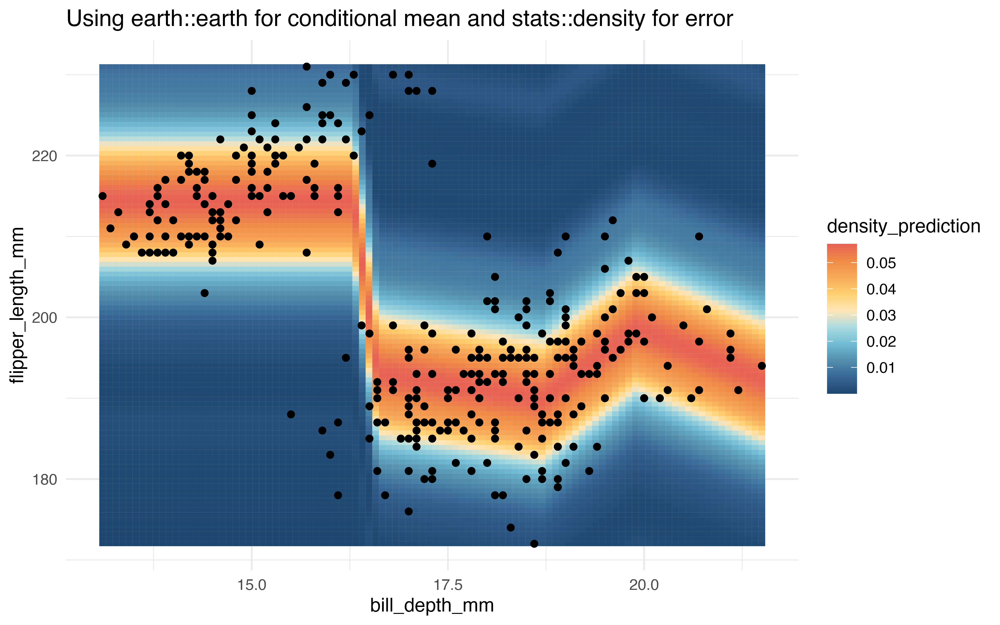

Thinking about applications of the super learner algorithm to causal inference, one key application is through modeling the treatment/exposure mechanism.
In many cases, the treatment/exposure is continuous, necessitating the estimation of a “generalized” propensity score — generalized in the sense that the treatment/exposure is no longer binary but continuous.
Here we demonstrate the application of
nadir::super_learner() in estimating such a generalized
propensity score.
We’re not going to worry (yet) about having the most realistic examples; the point is that we want to see if we can get density estimation working.
# in order to build a weighting based estimator, we might fit a conditional
# density model of our continuous exposure
data("Boston", package = "MASS")
# suppose our hypothesis of interest is "does crime reduce median home value?"
# and we want to control for the following potential confounders (all other variables in the Boston dataset)
#
# so we want to regress crime on all the other variables in the Boston dataset
reg_formula <- as.formula(paste0("crim ~ ", paste0(setdiff(colnames(Boston), c('medv', 'crim')), collapse = ' + ')))
# we would want to regress poverty on these variables
lnr_rf_homoskedastic_density <- function(data, formula, ...) {
lnr_homoskedastic_density(data, formula, mean_lnr = lnr_rf, ...)
}
lnr_ranger_homoskedastic_density <- function(data, formula, ...) {
lnr_homoskedastic_density(data, formula, mean_lnr = lnr_ranger, ...)
}
lnr_lm_homoskedastic_density <- function(data, formula, ...) {
lnr_homoskedastic_density(data, formula, mean_lnr = lnr_lm, ...)
}
lnr_earth_homoskedastic_density <- function(data, formula, ...) {
lnr_homoskedastic_density(data, formula, mean_lnr = lnr_earth, ...)
}
# we recommend setting the sl_lnr_type attribute to avoid warnings from super_learner()
attr(lnr_rf_homoskedastic_density, 'sl_lnr_type') <- 'density'
attr(lnr_ranger_homoskedastic_density, 'sl_lnr_type') <- 'density'
attr(lnr_lm_homoskedastic_density, 'sl_lnr_type') <- 'density'
attr(lnr_earth_homoskedastic_density, 'sl_lnr_type') <- 'density'
learned_sl_density_model <- super_learner(
data = Boston,
formula = reg_formula,
learners = list(
normal = lnr_lm_density,
ranger = lnr_ranger_homoskedastic_density,
earth = lnr_earth_homoskedastic_density,
lm = lnr_lm_homoskedastic_density
),
outcome_type = 'density',
verbose = TRUE
)
# compare the learners using negative log likelihood loss
compare_learners(learned_sl_density_model, loss_metric = negative_log_loss)
#> # A tibble: 1 × 4
#> normal ranger earth lm
#> <dbl> <dbl> <dbl> <dbl>
#> 1 1720. 940. 1199. 1395.
learned_sl_density_model$learner_weights
#> normal ranger earth lm
#> 0.03708189 0.86811748 0.03388520 0.06091542Let’s validate that conditional density works the way it should
lm_density_predict <- lnr_lm_homoskedastic_density(Boston, reg_formula)
f_lm <- function(ys) {
x <- Boston[1,]
sapply(ys, function(y) {
x[['crim']] <- y
lm_density_predict(x)
})
}
integrate(f_lm, min(Boston$crim) - sd(Boston$crim), max(Boston$crim) + sd(Boston$crim), subdivisions = 10000)
#> 0.9604284 with absolute error < 1.9e-05
earth_density_predict <- lnr_earth_homoskedastic_density(Boston, reg_formula, density_args = list(bw = 30))
f_earth <- function(ys) {
x <- Boston[1,]
sapply(ys, function(y) {
x[['crim']] <- y
earth_density_predict(x)
})
}
earth_density_predict(Boston[1,])
#> [1] 0.01314561
integrate(f_earth, min(Boston$crim) - 10*sd(Boston$crim), max(Boston$crim) + 10*sd(Boston$crim))
#> 0.9985896 with absolute error < 9.6e-05
y_seq <- seq(min(Boston$crim) - 10*sd(Boston$crim), max(Boston$crim) + 10*sd(Boston$crim), length.out = 10000)
# f_earth(y_seq)
delta_y <- y_seq[2]-y_seq[1]
sum(f_earth(y_seq)*delta_y)
#> [1] 0.9985918Heteroskedastic Learners
lnr_earth_mean_glm_var_heteroskedastic_density <- function(data, formula, ...) {
lnr_heteroskedastic_density(data, formula, mean_lnr = lnr_earth,
var_lnr = lnr_glm,
var_lnr_args = list(family = gaussian(link = 'log')),
...)
}
earth_mean_glm_var_heteroskedastic_predict <- lnr_earth_mean_glm_var_heteroskedastic_density(Boston, reg_formula)
earth_mean_glm_var_heteroskedastic_predict(Boston[1,])
#> 1
#> 5170.483
f_earth_glm <- function(ys) {
x <- Boston[1,]
sapply(ys, function(y) {
x[['crim']] <- y
earth_mean_glm_var_heteroskedastic_predict(x)
})
}
integrate(f_earth_glm, min(Boston$crim) - 10*sd(Boston$crim), max(Boston$crim) + 10*sd(Boston$crim), subdivisions = 1000)
#> 1373390 with absolute error < 13
sum(f_earth_glm(y_seq)*delta_y)
#> [1] 1373533
lnr_earth_glm_heteroskedastic_density <- function(data, formula, ...) {
lnr_heteroskedastic_density(data, formula, mean_lnr = lnr_earth,
var_lnr = lnr_mean,
density_args = list(bw = 3),
...)
}
lnr_earth_glm_heteroskedastic_predict <- lnr_earth_glm_heteroskedastic_density(Boston, reg_formula)
lnr_earth_glm_heteroskedastic_predict(Boston[1,])
#> [1] 0.02125507
f_earth_mean <- function(ys) {
x <- Boston[1,]
sapply(ys, function(y) {
x[['crim']] <- y
lnr_earth_glm_heteroskedastic_predict(x)
})
}
# integrate(f_earth, min(Boston$crim) - sd(Boston$crim), max(Boston$crim) + sd(Boston$crim), subdivisions = )
sum(f_earth_mean(y_seq)*delta_y)
#> [1] 0.9912458This indicates that as of now, the
lnr_heteroskedastic_density() method is not working
correctly.
2D Density Estimation
Perhaps visualizing density estimation in 2-to-3 dimensions will help people understand what’s going on.
Suppose our regression problem is to regress flipper length on bill depth from the palmer penguins dataset. We’ll fit some conditional density models and visualize their predictions.
library(palmerpenguins)
library(ggplot2)
library(MetBrewer)
data <- penguins[,c('flipper_length_mm', 'bill_depth_mm')]
data <- data[complete.cases(data),]
# conditional normal example:
learned_conditional_normal <- lnr_lm_density(data, flipper_length_mm ~ bill_depth_mm)
prediction_grid <- expand.grid(
flipper_length_mm = seq(172, 231, length.out = 100),
bill_depth_mm = seq(13.1, 21.5, length.out = 100))
prediction_grid$density_prediction <- learned_conditional_normal(prediction_grid)
ggplot(data, aes(x = bill_depth_mm, y = flipper_length_mm)) +
geom_tile(
data = prediction_grid,
mapping = aes(fill = density_prediction)) +
geom_point() +
theme_minimal() +
MetBrewer::scale_fill_met_c('Hiroshige', direction = -1) +
ggtitle("Conditionally Normal Density Model")
# earth and stats::density
learned_earth_homoskedastic_density <-
lnr_earth_homoskedastic_density(data, flipper_length_mm ~ bill_depth_mm)
prediction_grid$density_prediction <- learned_earth_homoskedastic_density(prediction_grid)
ggplot(data, aes(x = bill_depth_mm, y = flipper_length_mm)) +
geom_tile(
data = prediction_grid,
mapping = aes(fill = density_prediction)) +
geom_point() +
theme_minimal() +
MetBrewer::scale_fill_met_c('Hiroshige', direction = -1) +
ggtitle("Using earth::earth for conditional mean and stats::density for error")
# randomForest and stats::density
learned_rf_homoskedastic_density <-
lnr_rf_homoskedastic_density(data, flipper_length_mm ~ bill_depth_mm)
prediction_grid$density_prediction <- learned_rf_homoskedastic_density(prediction_grid)
ggplot(data, aes(x = bill_depth_mm, y = flipper_length_mm)) +
geom_tile(
data = prediction_grid,
mapping = aes(fill = density_prediction)) +
geom_point() +
theme_minimal() +
MetBrewer::scale_fill_met_c('Hiroshige', direction = -1) +
ggtitle("Using randomForest::randomForest for conditional mean and stats::density for error")
# ranger and stats::density
learned_ranger_homoskedastic_density <-
lnr_ranger_homoskedastic_density(data, flipper_length_mm ~ bill_depth_mm)
prediction_grid$density_prediction <- learned_ranger_homoskedastic_density(prediction_grid)
ggplot(data, aes(x = bill_depth_mm, y = flipper_length_mm)) +
geom_tile(
data = prediction_grid,
mapping = aes(fill = density_prediction)) +
geom_point() +
theme_minimal() +
MetBrewer::scale_fill_met_c('Hiroshige', direction = -1) +
ggtitle("Using ranger::ranger for conditional mean and stats::density for error")
# glm and stats::density
learned_glm_homoskedastic_density <-
lnr_homoskedastic_density(data, flipper_length_mm ~ bill_depth_mm, mean_lnr = lnr_glm)
prediction_grid$density_prediction <- learned_glm_homoskedastic_density(prediction_grid)
ggplot(data, aes(x = bill_depth_mm, y = flipper_length_mm)) +
geom_tile(
data = prediction_grid,
mapping = aes(fill = density_prediction)) +
geom_point() +
theme_minimal() +
MetBrewer::scale_fill_met_c('Hiroshige', direction = -1) +
ggtitle("Using stats::glm for conditional mean and stats::density for error")
# heteroskedastic method
learned_earth_heteroskedastic_density <-
lnr_heteroskedastic_density(data,
flipper_length_mm ~ bill_depth_mm,
mean_lnr = lnr_earth,
var_lnr = lnr_glm)
prediction_grid$density_prediction <- learned_earth_heteroskedastic_density(prediction_grid)
ggplot(data, aes(x = bill_depth_mm, y = flipper_length_mm)) +
geom_tile(
data = prediction_grid,
mapping = aes(fill = density_prediction)) +
geom_point() +
theme_minimal() +
MetBrewer::scale_fill_met_c('Hiroshige', direction = -1) +
ggtitle("Using earth::earth for conditional mean, stats::density for error distribution, \nand a stats::glm for predicting heteroskedasticity")
# super learner
learned_sl_density <-
super_learner(data,
flipper_length_mm ~ bill_depth_mm,
learners = list(
lm = lnr_lm_density,
earth = lnr_earth_homoskedastic_density,
rf = lnr_rf_homoskedastic_density,
ranger = lnr_ranger_homoskedastic_density,
heteroskedastic = lnr_heteroskedastic_density
),
extra_learner_args = list(
heteroskedastic = list(mean_lnr = lnr_earth, var_lnr = lnr_glm)
),
determine_super_learner_weights = determine_weights_using_neg_log_loss)
#> Warning in validate_learner_types(learners, outcome_type): Learners 1, 2, 3, 4, 5 with names [lm, earth, rf, ranger, heteroskedastic] do not have attr(., 'sl_lnr_type') == 'continuous'.
#> See the Creating Learners article on the {nadir} website.
#>
prediction_grid$density_prediction <- learned_sl_density(prediction_grid)
ggplot(data, aes(x = bill_depth_mm, y = flipper_length_mm)) +
geom_tile(
data = prediction_grid,
mapping = aes(fill = density_prediction)) +
geom_point() +
theme_minimal() +
MetBrewer::scale_fill_met_c('Hiroshige', direction = -1) +
ggtitle("Using super_learner on all of the above with negative log loss")